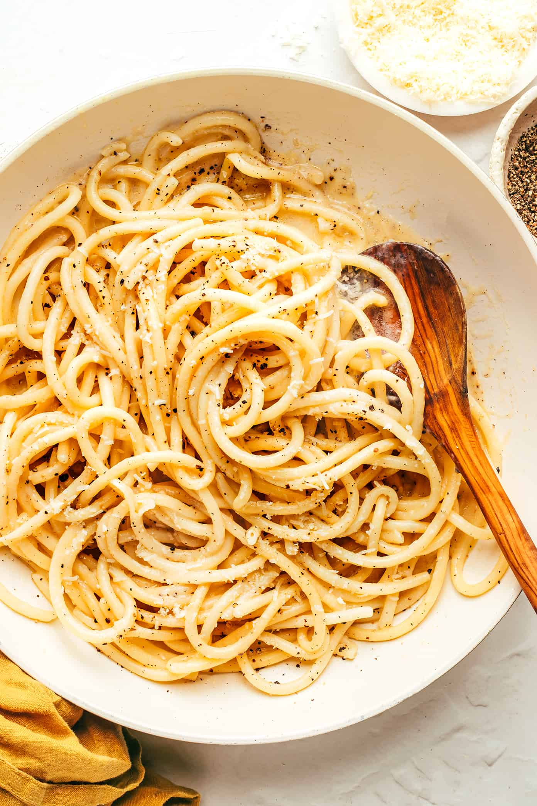

Ingredients
- 2/3 Cup Grated Parmesan
- 1/3 Cup Grated Pecorino Romano
- 2 Tbs Butter
- 1 Tbs Coarsely Ground
Black Pepper - Spaghetti
Steps
- Bring pot of salted water to boil and cook pasta untill almost done.
- Roast pepper in a large skillet with butter untill fragant, about 1 minute.
- Add pasta and a ladle of pasta water to skillet to finish cooking the pasta.
- When the water has evaporated from the skillet, melt in the grated cheese and serve.